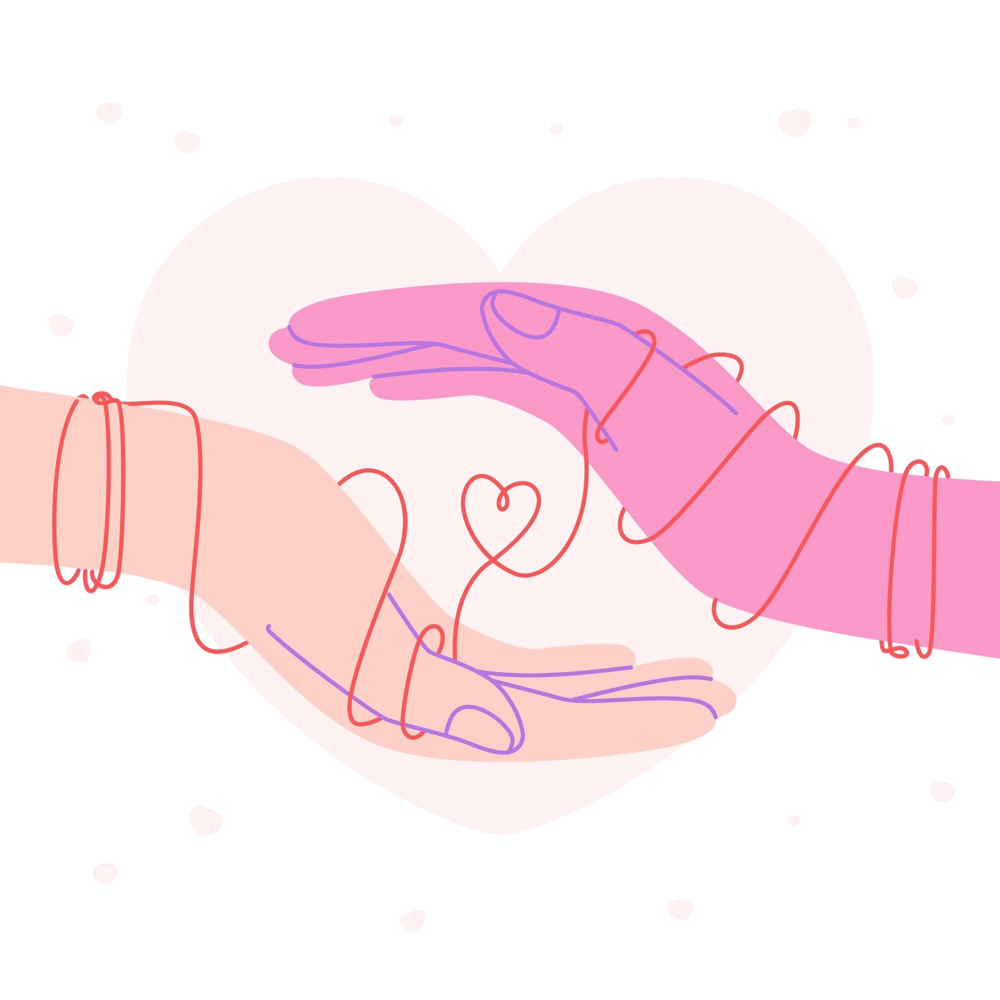

O que são mulheres atípicas?
Mulheres atípicas são mulheres que vivem realidades únicas e enfrentam desafios que muitas vezes não são
visíveis. São mães, cuidadoras ou mulheres neurodivergentes que, todos os dias, exercem força, sensibilidade e
resiliência.
Na RAMA, essas vivências são acolhidas com empatia e respeito. Aqui, cada mulher é vista por quem ela é — e não
pelas dificuldades que enfrenta.

Como a RAMA pode te apoiar
Acolhimento e escuta
Um espaço seguro para você ser ouvida, sem julgamentos.
Informação confiável
Conteúdos e orientações que ajudam a compreender e enfrentar desafios.
Rede de apoio entre mulheres
Conexão com outras mulheres que compartilham vivências semelhantes.
Grupos de conversa
Momentos de troca, acolhimento e fortalecimento coletivo.
Quem somos?
O Programa Rede de Apoio às Mulheres Atípicas (RAMA) nasce do encontro entre mulheres que cuidam, lutam,
sentem, cansam — e que também precisam ser cuidadas.
Somos uma rede mista (online e presencial) criada para oferecer acolhimento, escuta, informação e
fortalecimento emocional a mulheres atípicas.
O RAMA é composto por quatro projetos:
Laços Atípicos, Mente Sana, Yarah e
Kama.

